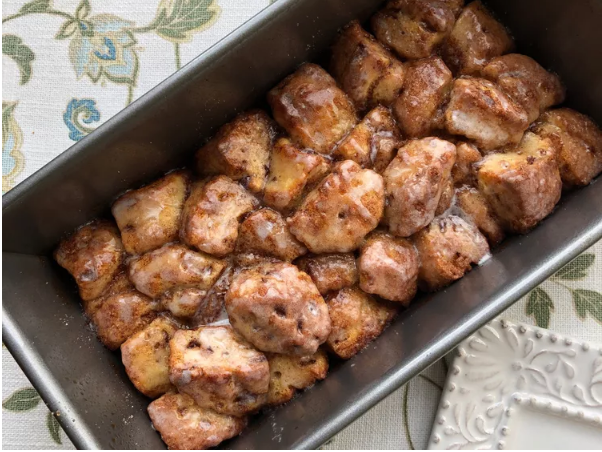

>
Home
Monkey Bread

A gooey way to make cinnamon bread even better!
- ½ cup white sugar
- 1 teaspoon ground cinnamon
- 1 (12.4 ounce) package refrigerated cinnamon roll dough with icing
- ¼ cup unsalted butter, melted
- Preheat the oven to 400 degrees F (200 degrees C). Grease a 9x5 inch loaf pan
- Mix sugar and cinnamon together in a bowl
- Set icing pack aside. Cut Cinnamon rolls into quarters. dip pieces in melted butter, coat in cinnamon-sugar, and place in the prepared pan
- Bake in the preheated oven until dough has risen and top is golden brown, 20 to 25 minutes; drizzle icing over top and let cool in the pan for 5 minutes. Turn the monkey bread out onto a plate and serve warm.